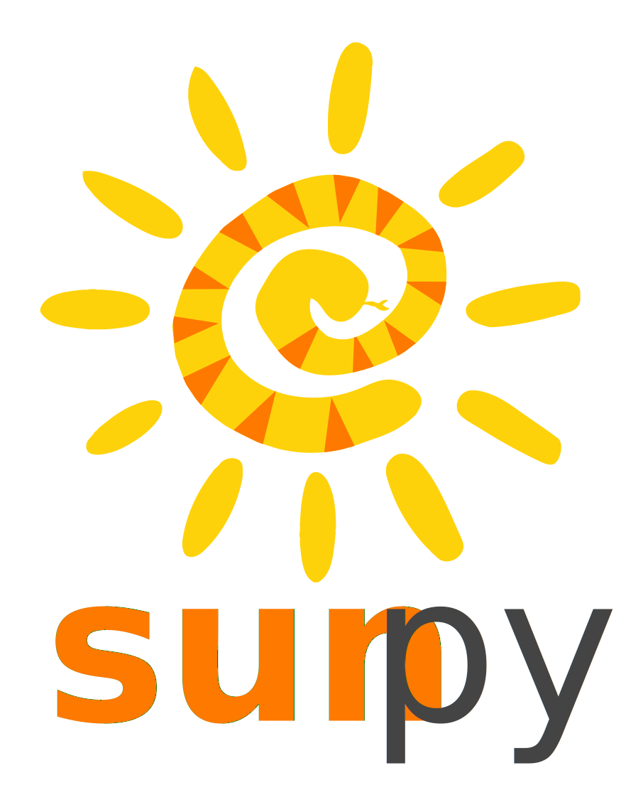

SunPy Spring 2022 Update
Stuart Mumford
Aperio Software

Follow along at home: https://cadair.github.io/pyhc-sunpy-update-2022-05/
A Reminder
SunPy consists of a core library, a set of affiliated packages and various tools and infrastructure.
- Regular releases of the core package: every 6 months
- 29 contributors to the latest 4.0 release of the core package, including 1310 commits in 182 merged pull requests.
- Also 8 packages affiliated with SunPy, 6 maintained by the sunpy developers.
- Releases since the last PyHC meeting:
- 3.1 and 4.0 releases of sunpy core
- 2.0 release of ndcube: A major redesign.

SunPy Coordination Meeting 2022
SunPy is having its annual coordination meeting in hybrid format in August this year.
All are welcome to attend, more details are here:
New features in 4.0
The 4.0 release of sunpy (the 4th long term support release), was released at the start of May, its headline features are:
- Major improvements to affine transforms, which are used for rotating maps.
- Now supports a much faster affine transform based on OpenCV, if opencv is installed.
- Consistent behaviour between algorithms for NaNs in the images, NaNs as missing values and clipping.
- A new decorator is also provided for registering your own affine transform functions (i.e. GPU or Dask based).
- Various other cleanups, see the Release Notes.
ndcube 2.0
The 2.0 release of the ndcube package is a complete rewrite, and new API.
We learnt a lot of lessons in writing ndcube 1.x and decided that because of changes to WCS (functional coordinates) in Astropy it was a great time to rethink.
Changes include:
- All coordinate related information now stored in Astropy WCS API compatible objects, with no bookkeeping in ndcube.
.extra_coordsis also now a WCS object.- Vastly improved (and changed)
.cropand.crop_by_valuesmethods for slicing the cube based on world coordinates. - Simplified quick-look plotting built in.
Read all about it in the docs, including why you might use ndcube (and not xarray).
Work on TimeSeries has started under a HDEE Grant
A HDEE grant awarded to SunPy has hired a developer who is currently working on improving how our TimeSeries class renders in Jupyter notebooks (or just HTML in general).
Other News from SunPy
We won a NASA grant under the "Open Source Tools, Frameworks, and Libraries" program for "Strengthening the Foundations of the SunPy Ecosystem". This includes money for technical infrastructure, coordinates, and documentation and teaching.
aiapy continues to develop with lots of instrument specific features for those working on AIA data.
Hack Ideas
During the hack sessions we would like to work on some PyHC tutorials using SunPy packages and other PyHC packages.
If you have any ideas let myself or Laura know!
Come say Hi!
- Matrix chat, join us on Element.
- sunpy & sunpy-dev @googlegroups.com mailing lists
- Twitter @SunPyProject
- Weekly community calls (Wednesday 1600 UTC): https://sunpy.org/jitsi